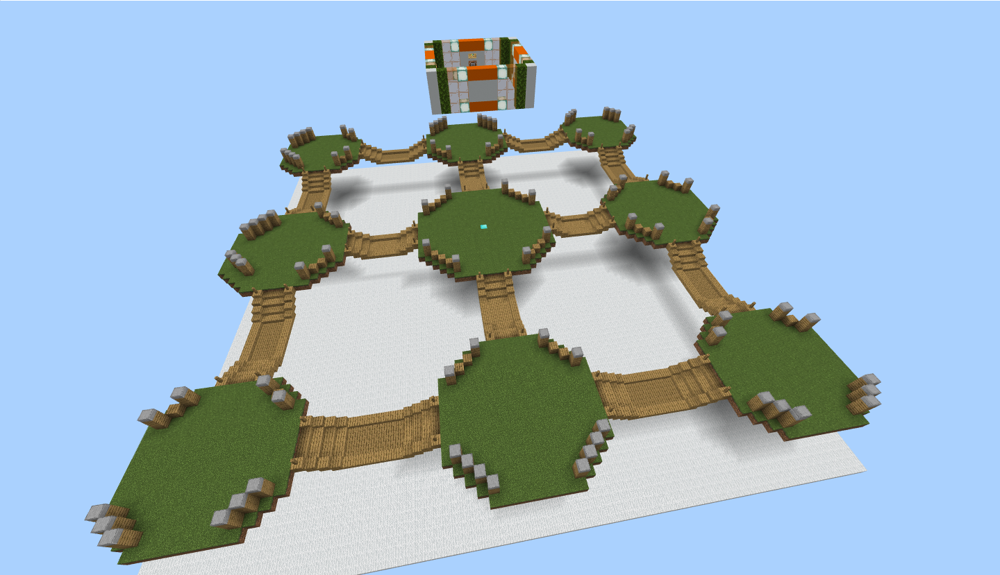
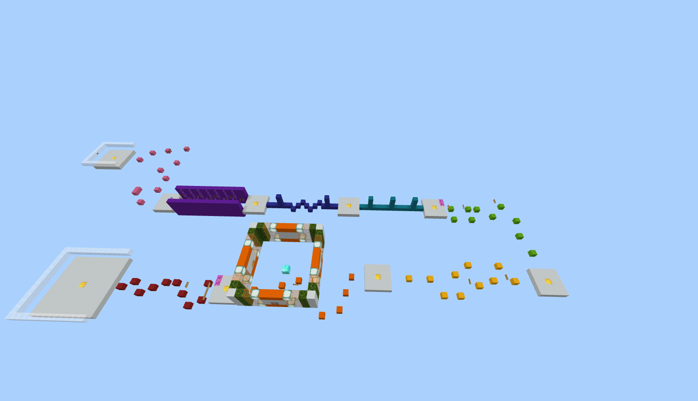

• 游戏介绍·街机游戏 •
TNT RUN！
游戏地图: Classic [SKY_GAME原创地图]
玩家走过的方块将会消失！
地图一共拥有5层！
掉下第五层后你将被淘汰！
尽你所能成为存活到最后的人吧！
掘一死战
游戏地图: Courtyard v2 [SKY_GAME原创地图]
使用铲子将雪块挖掉！
从而使其他人掉入虚空！
扔出的雪球也可使雪块消失！
尽你所能成为最后存活下来的人吧！
方块相扑
游戏地图: Classic [SKY_GAME原创地图]
所有玩家将被传送至平台上
玩家掉入虚空后将被淘汰！
但在掉入虚空前可以使用方块进行自救！
尽你所能获得游戏的胜利吧！
弓箭手大乱斗
游戏地图: Classic [SKY_GAME原创地图]
在此游戏开始时，你有15秒时间分散！
随后，所有人都将获得弓箭！
被射杀和掉入虚空都将被淘汰！
尽你所能成为最后存活下来的人吧！


星跳水立方
游戏地图: Dropper Collection
10张地图任你挑选！
从地图最高处一跃而下！
躲避空中的障碍物并落入水中！
激情足球
游戏地图: Football Field [SKY_GAME原创地图]
在激情足球中所有玩家将被分为两队.
将地图中央的足球(羊)击退入敌方的球门.
先得到5分的队伍即可获胜游戏的胜利！

竞速跑酷
游戏地图: Classic [SKY_GAME原创地图]
通过8个不同关卡后到达终点！
每个关卡中有存档点！
用你的跑酷技术去征服其他玩家吧！
信仰方块
游戏地图: Countyard v2 [SKY_GAME原创地图]
类似于TNT RUN的一款游戏.
但是你走过的方块会变色！
变色规律如下:白色-黄色-橙色-红色-消失！